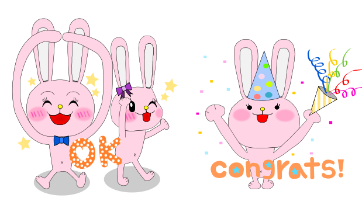
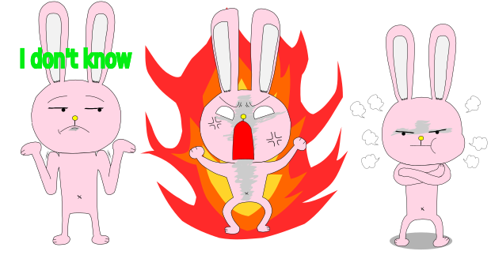

RPG Adventure Game Summer 2015 ~ Present
- Created RPG game where you go on an adventure and kill monsters to get coins and move on to the next adventure
- Designed storyline of how the adventure continues
- Integrated music, images, and animations to make game more fun and exciting for users
- Used and implemented Ruby Script
Line Stickers Summer 2015 ~ Present
- Created emotional icons of rabbits with various facial expressions for mobile messaging app Line
- Incorporated words in each icon for easier use
- In the process of selling stickers for public use
- Designed using Inkscape illustration software


Create My Own Website October 2015 ~ November 2015
- Designed and Programmed my own website
- Implemented in HTML